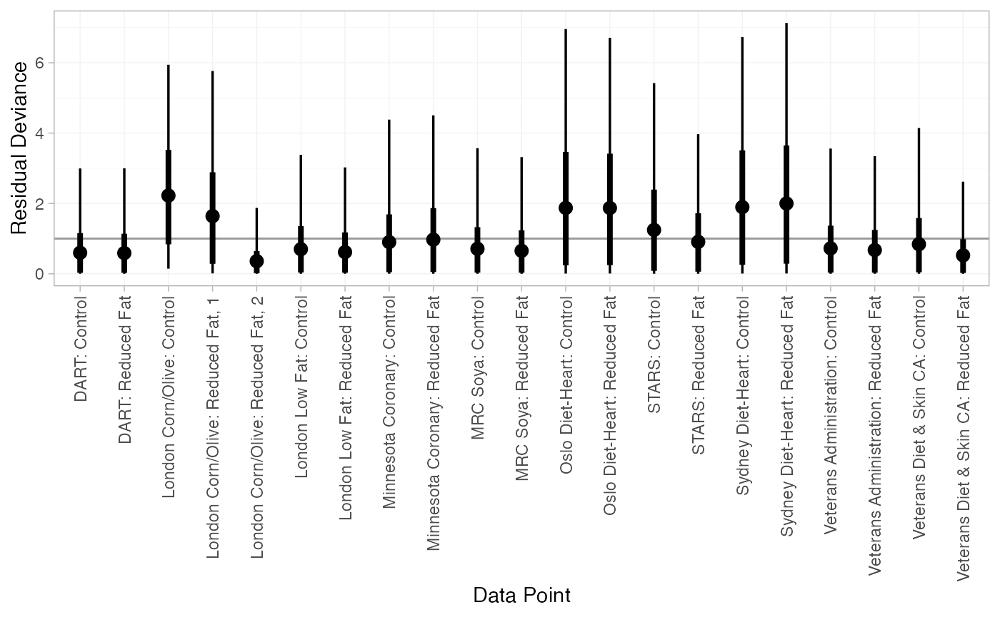
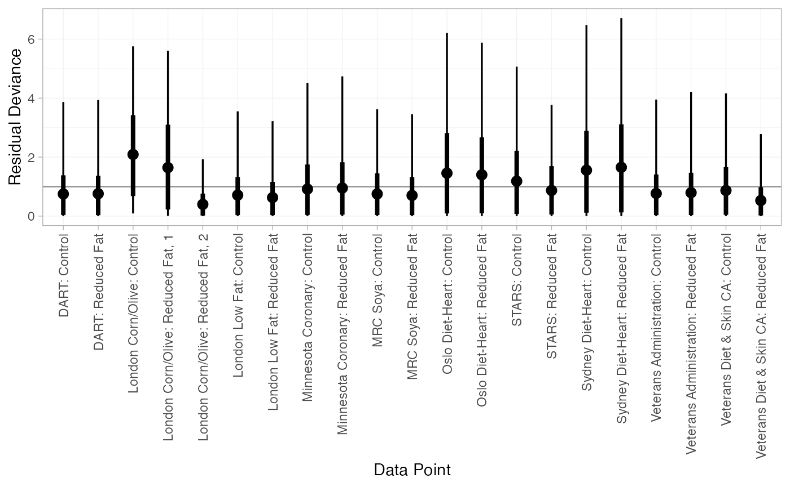
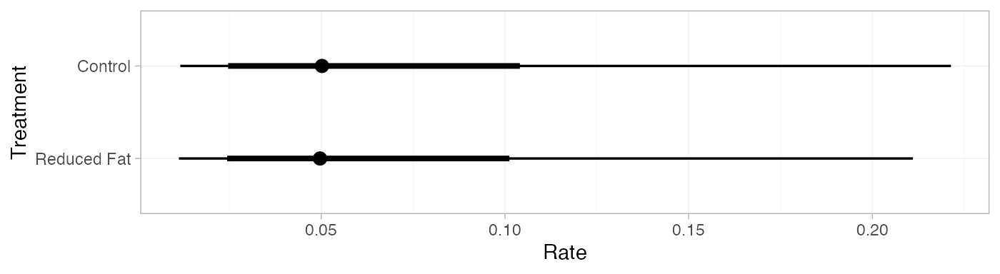
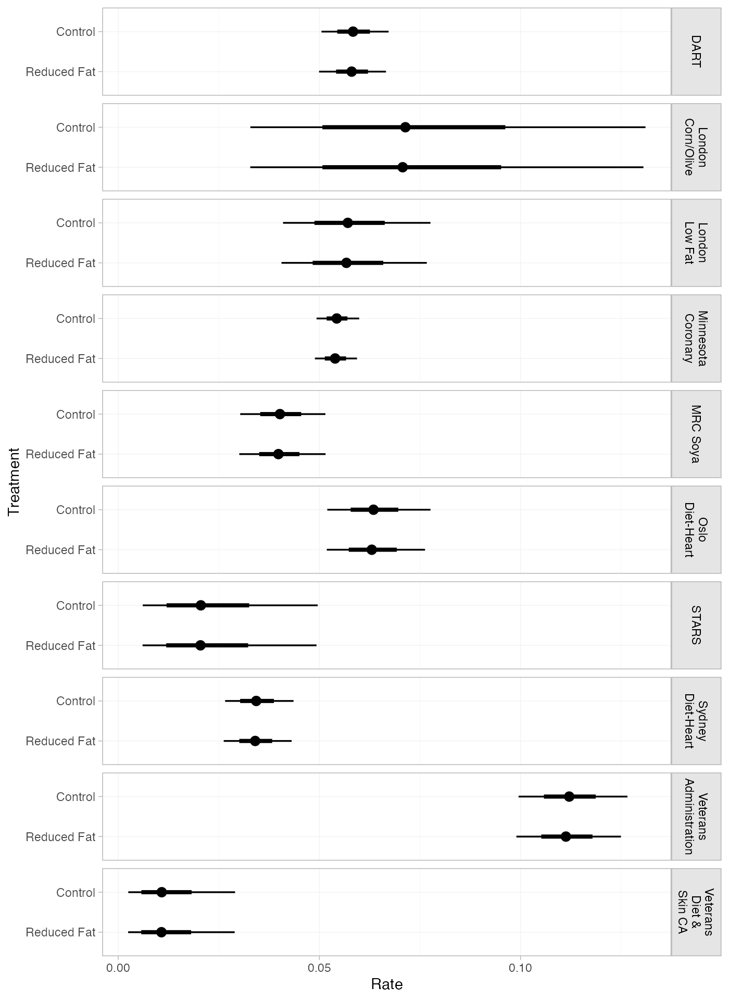

library(multinma)
options(mc.cores = parallel::detectCores())#> For execution on a local, multicore CPU with excess RAM we recommend calling
#> options(mc.cores = parallel::detectCores())
#>
#> Attaching package: 'multinma'
#> The following objects are masked from 'package:stats':
#>
#> dgamma, pgamma, qgammaThis vignette describes the analysis of 10 trials comparing reduced fat diets to control (non-reduced fat diets) for preventing mortality (Hooper et al. 2000; Dias et al. 2011). The data are available in this package as dietary_fat:
head(dietary_fat)
#> studyn studyc trtn trtc r n E
#> 1 1 DART 1 Control 113 1015 1917.0
#> 2 1 DART 2 Reduced Fat 111 1018 1925.0
#> 3 2 London Corn/Olive 1 Control 1 26 43.6
#> 4 2 London Corn/Olive 2 Reduced Fat 5 28 41.3
#> 5 2 London Corn/Olive 2 Reduced Fat 3 26 38.0
#> 6 3 London Low Fat 1 Control 24 129 393.5Setting up the network
We begin by setting up the network - here just a pairwise meta-analysis. We have arm-level rate data giving the number of deaths (r) and the person-years at risk (E) in each arm, so we use the function set_agd_arm(). We set “Control” as the reference treatment.
diet_net <- set_agd_arm(dietary_fat,
study = studyc,
trt = trtc,
r = r,
E = E,
trt_ref = "Control",
sample_size = n)
diet_net
#> A network with 10 AgD studies (arm-based).
#>
#> ------------------------------------------------------- AgD studies (arm-based) ----
#> Study Treatments
#> DART 2: Control | Reduced Fat
#> London Corn/Olive 2: Control | Reduced Fat
#> London Low Fat 2: Control | Reduced Fat
#> Minnesota Coronary 2: Control | Reduced Fat
#> MRC Soya 2: Control | Reduced Fat
#> Oslo Diet-Heart 2: Control | Reduced Fat
#> STARS 2: Control | Reduced Fat
#> Sydney Diet-Heart 2: Control | Reduced Fat
#> Veterans Administration 2: Control | Reduced Fat
#> Veterans Diet & Skin CA 2: Control | Reduced Fat
#>
#> Outcome type: rate
#> ------------------------------------------------------------------------------------
#> Total number of treatments: 2
#> Total number of studies: 10
#> Reference treatment is: Control
#> Network is connectedWe also specify the optional sample_size argument, although it is not strictly necessary here. In this case sample_size would only be required to produce a network plot with nodes weighted by sample size, and a network plot is not particularly informative for a meta-analysis of only two treatments. (The sample_size argument is more important when a regression model is specified, since it also enables automatic centering of predictors and production of predictions for studies in the network, see ?set_agd_arm.)
Meta-analysis models
We fit both fixed effect (FE) and random effects (RE) models.
Fixed effect meta-analysis
First, we fit a fixed effect model using the nma() function with trt_effects = "fixed". We use \(\mathrm{N}(0, 100^2)\) prior distributions for the treatment effects \(d_k\) and study-specific intercepts \(\mu_j\). We can examine the range of parameter values implied by these prior distributions with the summary() method:
summary(normal(scale = 100))
#> A Normal prior distribution: location = 0, scale = 100.
#> 50% of the prior density lies between -67.45 and 67.45.
#> 95% of the prior density lies between -196 and 196.The model is fitted using the nma() function. By default, this will use a Poisson likelihood with a log link function, auto-detected from the data.
diet_fit_FE <- nma(diet_net,
trt_effects = "fixed",
prior_intercept = normal(scale = 100),
prior_trt = normal(scale = 100))Basic parameter summaries are given by the print() method:
diet_fit_FE
#> A fixed effects NMA with a poisson likelihood (log link).
#> Inference for Stan model: poisson.
#> 4 chains, each with iter=2000; warmup=1000; thin=1;
#> post-warmup draws per chain=1000, total post-warmup draws=4000.
#>
#> mean se_mean sd 2.5% 25% 50% 75% 97.5% n_eff Rhat
#> d[Reduced Fat] -0.01 0.00 0.05 -0.11 -0.04 -0.01 0.03 0.09 3014 1
#> lp__ 5386.25 0.06 2.39 5380.47 5384.91 5386.56 5387.99 5389.81 1596 1
#>
#> Samples were drawn using NUTS(diag_e) at Fri Dec 4 18:06:17 2020.
#> For each parameter, n_eff is a crude measure of effective sample size,
#> and Rhat is the potential scale reduction factor on split chains (at
#> convergence, Rhat=1).By default, summaries of the study-specific intercepts \(\mu_j\) are hidden, but could be examined by changing the pars argument:
The prior and posterior distributions can be compared visually using the plot_prior_posterior() function:
plot_prior_posterior(diet_fit_FE)Random effects meta-analysis
We now fit a random effects model using the nma() function with trt_effects = "random". Again, we use \(\mathrm{N}(0, 100^2)\) prior distributions for the treatment effects \(d_k\) and study-specific intercepts \(\mu_j\), and we additionally use a \(\textrm{half-N}(5^2)\) prior for the heterogeneity standard deviation \(\tau\). We can examine the range of parameter values implied by these prior distributions with the summary() method:
summary(normal(scale = 100))
#> A Normal prior distribution: location = 0, scale = 100.
#> 50% of the prior density lies between -67.45 and 67.45.
#> 95% of the prior density lies between -196 and 196.
summary(half_normal(scale = 5))
#> A half-Normal prior distribution: location = 0, scale = 5.
#> 50% of the prior density lies between 0 and 3.37.
#> 95% of the prior density lies between 0 and 9.8.Fitting the RE model
diet_fit_RE <- nma(diet_net,
trt_effects = "random",
prior_intercept = normal(scale = 10),
prior_trt = normal(scale = 10),
prior_het = half_normal(scale = 5))Basic parameter summaries are given by the print() method:
diet_fit_RE
#> A random effects NMA with a poisson likelihood (log link).
#> Inference for Stan model: poisson.
#> 4 chains, each with iter=2000; warmup=1000; thin=1;
#> post-warmup draws per chain=1000, total post-warmup draws=4000.
#>
#> mean se_mean sd 2.5% 25% 50% 75% 97.5% n_eff Rhat
#> d[Reduced Fat] -0.01 0.00 0.08 -0.18 -0.06 -0.02 0.04 0.15 1884 1
#> lp__ 5378.70 0.13 3.90 5370.04 5376.36 5379.05 5381.40 5385.52 967 1
#> tau 0.13 0.00 0.11 0.00 0.05 0.10 0.17 0.42 980 1
#>
#> Samples were drawn using NUTS(diag_e) at Fri Dec 4 18:06:23 2020.
#> For each parameter, n_eff is a crude measure of effective sample size,
#> and Rhat is the potential scale reduction factor on split chains (at
#> convergence, Rhat=1).By default, summaries of the study-specific intercepts \(\mu_j\) and study-specific relative effects \(\delta_{jk}\) are hidden, but could be examined by changing the pars argument:
The prior and posterior distributions can be compared visually using the plot_prior_posterior() function:
plot_prior_posterior(diet_fit_RE, prior = c("trt", "het"))
Model comparison
Model fit can be checked using the dic() function:
(dic_FE <- dic(diet_fit_FE))
#> Residual deviance: 22.3 (on 21 data points)
#> pD: 11.1
#> DIC: 33.4
(dic_RE <- dic(diet_fit_RE))
#> Residual deviance: 21.3 (on 21 data points)
#> pD: 13.3
#> DIC: 34.6Both models appear to fit the data well, as the residual deviance is close to the number of data points. The DIC is very similar between models, so the FE model may be preferred for parsimony.
We can also examine the residual deviance contributions with the corresponding plot() method.
plot(dic_FE)
plot(dic_RE)
Further results
Dias et al. (2011) produce absolute predictions of the mortality rates on reduced fat and control diets, assuming a Normal distribution on the baseline log rate of mortality with mean \(-3\) and precision \(1.77\). We can replicate these results using the predict() method. The baseline argument takes a distr() distribution object, with which we specify the corresponding Normal distribution. We set type = "response" to produce predicted rates (type = "link" would produce predicted log rates).
pred_FE <- predict(diet_fit_FE,
baseline = distr(qnorm, mean = -3, sd = 1.77^-0.5),
type = "response")
pred_FE
#> mean sd 2.5% 25% 50% 75% 97.5% Bulk_ESS Tail_ESS Rhat
#> pred[Control] 0.07 0.06 0.01 0.03 0.05 0.08 0.22 3702 3732 1
#> pred[Reduced Fat] 0.07 0.06 0.01 0.03 0.05 0.08 0.22 3657 3705 1
plot(pred_FE)
pred_RE <- predict(diet_fit_RE,
baseline = distr(qnorm, mean = -3, sd = 1.77^-0.5),
type = "response")
pred_RE
#> mean sd 2.5% 25% 50% 75% 97.5% Bulk_ESS Tail_ESS Rhat
#> pred[Control] 0.07 0.06 0.01 0.03 0.05 0.08 0.21 3980 3886 1
#> pred[Reduced Fat] 0.06 0.06 0.01 0.03 0.05 0.08 0.21 3941 3925 1
plot(pred_RE)
If the baseline argument is omitted, predicted rates will be produced for every study in the network based on their estimated baseline log rate \(\mu_j\):
pred_FE_studies <- predict(diet_fit_FE, type = "response")
pred_FE_studies
#> ------------------------------------------------------------------- Study: DART ----
#>
#> mean sd 2.5% 25% 50% 75% 97.5% Bulk_ESS Tail_ESS Rhat
#> pred[DART: Control] 0.06 0 0.05 0.06 0.06 0.06 0.07 5037 2603 1
#> pred[DART: Reduced Fat] 0.06 0 0.05 0.06 0.06 0.06 0.07 6845 3444 1
#>
#> ------------------------------------------------------ Study: London Corn/Olive ----
#>
#> mean sd 2.5% 25% 50% 75% 97.5% Bulk_ESS Tail_ESS Rhat
#> pred[London Corn/Olive: Control] 0.07 0.02 0.03 0.06 0.07 0.09 0.13 5792 2987 1
#> pred[London Corn/Olive: Reduced Fat] 0.07 0.02 0.03 0.06 0.07 0.09 0.13 6040 3133 1
#>
#> --------------------------------------------------------- Study: London Low Fat ----
#>
#> mean sd 2.5% 25% 50% 75% 97.5% Bulk_ESS Tail_ESS Rhat
#> pred[London Low Fat: Control] 0.06 0.01 0.04 0.05 0.06 0.06 0.08 6939 3070 1
#> pred[London Low Fat: Reduced Fat] 0.06 0.01 0.04 0.05 0.06 0.06 0.08 7514 3051 1
#>
#> ----------------------------------------------------- Study: Minnesota Coronary ----
#>
#> mean sd 2.5% 25% 50% 75% 97.5% Bulk_ESS Tail_ESS Rhat
#> pred[Minnesota Coronary: Control] 0.05 0 0.05 0.05 0.05 0.06 0.06 3856 3192 1
#> pred[Minnesota Coronary: Reduced Fat] 0.05 0 0.05 0.05 0.05 0.06 0.06 7041 3393 1
#>
#> --------------------------------------------------------------- Study: MRC Soya ----
#>
#> mean sd 2.5% 25% 50% 75% 97.5% Bulk_ESS Tail_ESS Rhat
#> pred[MRC Soya: Control] 0.04 0.01 0.03 0.04 0.04 0.04 0.05 6103 3068 1
#> pred[MRC Soya: Reduced Fat] 0.04 0.01 0.03 0.04 0.04 0.04 0.05 7099 2655 1
#>
#> -------------------------------------------------------- Study: Oslo Diet-Heart ----
#>
#> mean sd 2.5% 25% 50% 75% 97.5% Bulk_ESS Tail_ESS Rhat
#> pred[Oslo Diet-Heart: Control] 0.06 0.01 0.05 0.06 0.06 0.07 0.08 6122 2986 1
#> pred[Oslo Diet-Heart: Reduced Fat] 0.06 0.01 0.05 0.06 0.06 0.07 0.08 8122 3079 1
#>
#> ------------------------------------------------------------------ Study: STARS ----
#>
#> mean sd 2.5% 25% 50% 75% 97.5% Bulk_ESS Tail_ESS Rhat
#> pred[STARS: Control] 0.02 0.01 0.01 0.01 0.02 0.03 0.05 6223 2785 1
#> pred[STARS: Reduced Fat] 0.02 0.01 0.01 0.01 0.02 0.03 0.05 6187 2786 1
#>
#> ------------------------------------------------------ Study: Sydney Diet-Heart ----
#>
#> mean sd 2.5% 25% 50% 75% 97.5% Bulk_ESS Tail_ESS Rhat
#> pred[Sydney Diet-Heart: Control] 0.03 0 0.03 0.03 0.03 0.04 0.04 7031 2946 1
#> pred[Sydney Diet-Heart: Reduced Fat] 0.03 0 0.03 0.03 0.03 0.04 0.04 8060 2759 1
#>
#> ------------------------------------------------ Study: Veterans Administration ----
#>
#> mean sd 2.5% 25% 50% 75% 97.5% Bulk_ESS Tail_ESS
#> pred[Veterans Administration: Control] 0.11 0.01 0.1 0.11 0.11 0.12 0.13 4947 3095
#> pred[Veterans Administration: Reduced Fat] 0.11 0.01 0.1 0.11 0.11 0.12 0.12 7272 3599
#> Rhat
#> pred[Veterans Administration: Control] 1
#> pred[Veterans Administration: Reduced Fat] 1
#>
#> ------------------------------------------------ Study: Veterans Diet & Skin CA ----
#>
#> mean sd 2.5% 25% 50% 75% 97.5% Bulk_ESS Tail_ESS
#> pred[Veterans Diet & Skin CA: Control] 0.01 0.01 0 0.01 0.01 0.02 0.03 5859 2517
#> pred[Veterans Diet & Skin CA: Reduced Fat] 0.01 0.01 0 0.01 0.01 0.02 0.03 5852 2586
#> Rhat
#> pred[Veterans Diet & Skin CA: Control] 1
#> pred[Veterans Diet & Skin CA: Reduced Fat] 1
plot(pred_FE_studies) + ggplot2::facet_grid(Study~., labeller = ggplot2::label_wrap_gen(width = 10))
References
Dias, S., N. J. Welton, A. J. Sutton, and A. E. Ades. 2011. “NICE DSU Technical Support Document 2: A Generalised Linear Modelling Framework for Pair-Wise and Network Meta-Analysis of Randomised Controlled Trials.” National Institute for Health and Care Excellence. http://nicedsu.org.uk/.
Hooper, L., C. D. Summerbell, J. P. T. Higgins, R. L. Thompson, G. Clements, N. Capps, G. Davey Smith, R. Riemersma, and S. Ebrahim. 2000. “Reduced or Modified Dietary Fat for Preventing Cardiovascular Disease.” Cochrane Database of Systematic Reviews, no. 2. https://doi.org/10.1002/14651858.CD002137.